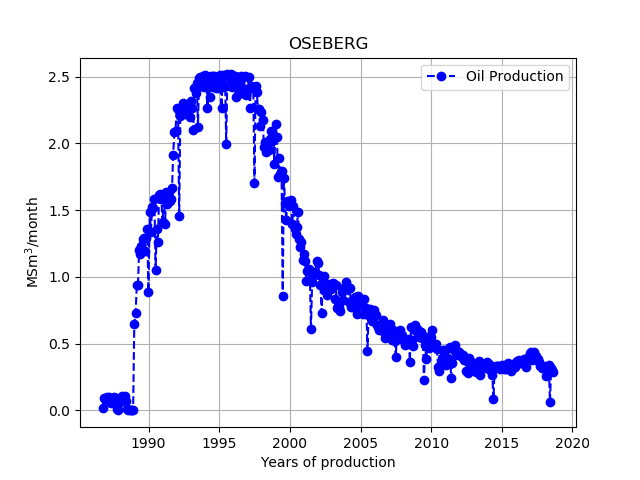

Exercise 1: Visualize oil production data
When analyzing data it is very advantageous to start by making a plot. The human mind is usually good at detecting patterns, and by looking at the data one can think of simple ideas to test out, before possibly doing a more comprehensive analysis.
As part of this project we will look at some of the datasets that are available at the Norwegian Petroleum Directorate (NPD) website. These data are updated regularly, and if you are able to make a good model of, e.g., the historical oil production versus time, you could use it to forecast the production in the future as well.
Part 1.
A challenge when doing data analysis is that the data is usually not available
in the format you would like it to be in. In Python there are many ways of
preprocessing and manipulating data, but the
Pandas library is particularly well-suited
for the purpose.
Below is a code snippet to help you to get started with reading data from Excel
into a Pandas DataFrame:
import numpy as np
import pandas as pd
import pathlib
import matplotlib.pyplot as plt
def df_field(name, datafile='field_production_gross_monthly.xls', col=0):
folder = pathlib.Path.cwd().parent.joinpath('data')
filename = folder.joinpath(datafile)
df = pd.read_excel(filename)
columns = df.columns
return df[df[df.columns[col]] == name]
Note that all data files needed for this project are located in the data
folder.
- Explain in your own words what the above Python function does.
- Open the file
field_production_gross_monthly.xls, and compare its contents with output from the commandprint(df_field('OSEBERG')).
Next, we wish to look at the historical oil production versus time for a specific field. Such plots are already available at the NPD website, but here you are going to make your own by using the matplotlib library.
When we develop code, it is good practice to use functions to divide a problem into smaller pieces. We start by extracting oil production data for a specific field with the function already defined in Part 1:
def prod_data(name):
df = df_field(name)
columns = df.columns
Year = df[ ... ]
Month = df[ ... ]
OilProd = df[ ... ]
#Assume 30 days in each month and 365 in year
Year = Year + Month*30/365
return Year, OilProd
- Complete writing the above function.
- We also make a function that plots the oil production versus time:
def plot_prod_data(name):
Year, OilProd=prod_data(name)
... # make plot here
- Finish implementing this Python function as well.
plot_prod_data('OSEBERG') should generate a figure that looks
something like this:

Part 4 (Optional). In the oil production plot for a given field, we additionally want to include information about the number of wells that have been drilled. Specifically, we wish to plot, on a separate \( y \)-axis, the cumulative number of wells present in the field at any given moment in time.
Well data is stored in the file wellbore_development_all.xls.
In this file, each row entry corresponds to a single well, and the
field to which it belongs is stored in the column with index 14.
Hence, we can start by writing:
def plot_prod_and_well_data(name):
fn = 'wellbore_development_all.xls'
df = df_field(name, datafile=fn, col=14)
columns = df.columns
year = df['Completed year'] # alternatively: fetch by index (32)
...
Note that the Excel file only tells you the year in which each well was completed; there could be many wells drilled in a given year, and the list is not sorted. This means that you need to a little more work to process the data:
- Finish implementing the above Python function.
- Calling it with a specific field as input should generate a plot that looks something like this:

If you want, you can also distinguish between different types of wells, i.e., between injection/production/observation wells.
Exercise 2: More wells, more oil?
A very common statement is "more wells - more oil". The fields on the Norwegian Continental Shelf (NCS) are in different stages of production, and they have varying reservoir properties, so a thorough analysis would take time. However, we would at least expect to see some correlation between the total amount of oil produced and the number of wells drilled, if the hypothesis is correct.
Part 1. The first task is to fetch the (final) number of wells drilled for each field, as well as the total (cumulative) oil production. The resulting values are to be stored in arrays:
- The hard way is to do this yourself by extracting the data you need from a combination of the provided NPD
.xlsfiles. - Alternatively, you can 'cheat' and use the preprocessed data stored in
fields_oil_wells.xlsx.
- Make a scatter plot showing the cumulative oil production of all the fields on the \( y \)-axis. On the \( x \)-axis, plot the number of wells for the fields (you might want to exclude observation wells).
Part 3. The Draugen field is very homogeneous, and it is therefore regarded as an ideal field on the NCS. It also has an active aquifer underlying the reservoir, meaning that when producing oil by water injection the aquifer provides additional pressure support.
- Does the plot you made in Part 2 indicate that Draugen has been a successful field compared to the others? Why/why not?
Exercise 3: Finite differences
The most straightforward way to approximate the derivative of a function \( f=f(x) \) is to use the function value at \( x \) and at a small distance \( h \) from \( x \), e.g.: $$ \begin{equation} f^{\prime}(x)\approx\frac{f(x+h)-f(x)}{h}\,. \tag{1} \end{equation} $$ This approximation is called the forward difference. For 'well-behaved' functions, it can be shown using Taylor's formula that $$ \begin{equation} \tag{2} f^{\prime}(x)=\frac{f(x+h)-f(x)}{h}-h\frac{f^{\prime\prime}(\xi)}{2}\,, \end{equation} $$ for some \( \xi \) between \( x \) and \( x+h \).
Part 1. Explain in detail how equation (2) can be derived from Taylor's formula.
What is the order of the truncation error for the forward difference numerical differentiation method? What should ideally happen if you lower the step size by a factor of ten?
Part 2. Alternatively, we could use the backward difference approximation: $$ \begin{equation} f^{\prime}(x)\approx\frac{f(x)-f(x-h)}{h}\,. \tag{3} \end{equation} $$ For this method, use Taylor expansions to derive a similar expression as (2).
What is the truncation error for this method?
Part 3. The central difference approximation of the derivative is given by $$ \begin{equation} f^{\prime}(x)\approx\frac{f(x+h)-f(x-h)}{2h}\,. \tag{4} \end{equation} $$ Again, use Taylor expansions to derive this expression. What is the truncation error, and how does it compare to the other two methods? (hint: combine the derivations you did for the forward and backward finite difference schemes)
Part 4. Implement a Python function that can calculate numerical derivatives of functions \( f=f(x) \). The routine should be able to handle all of the three aforementioned formulas (forward difference, backward difference, central difference), as well as different values of the step size, \( h \).
You may take the following code as a starting point:
def numerical_derivative(f, x, *, method='forward', h=1.0e-4):
"""
Function to numerically evaluate the derivative of a function
f=f(x).
:param f: Function to differentiate.
:param x: Point at which to evaluate the derivative.
:param method: Approximation formula to apply. Available options
are 'forward' (default), 'backward', and 'central'
finite differences.
:param h: Step size (default: 1.0e-4).
:return: Approximate value for f'(x).
"""
Part 5.
Consider the function $$ f(x)=\sqrt{x^2+5}\,. $$
We want to estimate the numerical error when calculating \( f^\prime(1) \) with a finite difference formula:
- First, show that the exact value of the derivative is \( f^\prime(1)=\frac{1}{\sqrt{6}} \).
- Apply your implemented Python routine to numerically evaluate \( f^{\prime}(1) \). Do this for \( h=10^{-16}, h=10^{-15}, \ldots \), up to \( h=10^{-1} \), and for all of the three introduced finite difference formulas.
- For each differentiation method, make a figure showing the absolute value of the error versus \( h \) on a double-logarithmic plot.
Exercise 4: Fitting a simple linear model to data
When dealing with physical data points, they rarely fit a smooth curve, but we would still like to calculate derivatives to report, e.g., how fast a quantity is changing as a function of time. One way of achieving this is to calculate the derivative directly from the data, using a numerical differentiation formula. However, such an approach can be very sensitive to the choice of points at which we evaluate the derivative.
Another approach is to fit a straight line to the data, and report the slope of the line. Suppose we are given \( N \) data points (\( x_i \), \( y_i \)), and that we wish to approximate \( y \) (the dependent variable) as a linear function of \( x \) (the independent variable), i.e.: $$ y\approx \alpha+\beta\cdot{x}\,. $$ One common algorithm for doing this is the method of least squares. The idea here is to select the slope \( \beta \) and the intercept \( \alpha \) in such a way that the sum of squares of distances from the line to the data points are minimized. Mathematically, we need to make the following expression as small as possible: $$ \begin{equation} \tag{5} \chi^2=\displaystyle\sum_{i=1}^{N}\left(y_i-\alpha-\beta\cdot{x_i}\right)^2\,. \end{equation} $$
To find the minimum, we can differentiate (5) with respect to both \( \alpha \) and \( \beta \), and set the resulting expressions equal to zero. If we do that, it is possible to show that we must have $$ \begin{equation} \tag{6} \alpha=\overline{y}-\beta\overline{x}\,, \end{equation} $$ and $$ \begin{equation} \tag{7} \beta=\frac{\displaystyle\sum_{i=1}^{N}(x_i-\overline{x})(y_i-\overline{y})} {\displaystyle\sum_{i=1}^{N}(x_i-\overline{x})^2} \end{equation} $$ in which \( \overline{x} \) and \( \overline{y} \) are arithmetic averages of the \( x- \) and \( y \)-values: $$ \begin{align} \overline{x} &= \frac{1}{N}\displaystyle\sum_{i=1}^{N} x_{i} \tag{8}\\ \overline{y} &= \frac{1}{N}\displaystyle\sum_{i=1}^{N} y_{i} \,. \tag{9} \end{align} $$ The algorithm is also referred to as ordinary least squares regression (OLSR), or simple linear regression. It is a standard technique used in statistical analyses of empirical data. Often, the goal is to be able to predict the outcome \( y \) based on a knowledge of \( x \).
Part 1.
- Finish the implementation of the following Python function:
def OLSR(x, y):
"""
Custom implementation of Ordinary Least Squares Regression.
:param x: Input data points for the independent variable (array)
:param y: Input data points for the dependent variable (array)
:return: Tuple consisting of (intercept, slope) of the regression line.
"""
Part 2.
- Test the correctness of your implementation by applying the function to a fabricated data set of your own choosing in which the relationship between \( x \) and \( y \) is exactly linear.
The goodness of fit of a statistical model is frequently evaluated by considering the coefficient of determination, or \( R^2 \) (R-squared). The purpose of \( R^2 \) is to measure the proportion of variation in the dependent variable that can be explained by variation in the independent variable(s). For the cases investigated in this project, the relevant formula is $$ \begin{equation} R^2=1-\frac{\displaystyle\sum_{i=1}^{N}(y_i-\hat{y_i})^2} {\displaystyle\sum_{i=1}^{N}(y_i-\overline{y})^2}\,, \tag{10} \end{equation} $$ in which \( \hat{y_i} \) is the prediction of the model for data point \( i \). For least squares regression models it can be shown that \( R^2=\rho^2 \), where \( \rho \) is Pearson's correlation coefficient.
- Fill in the missing details of the following Python function:
def calc_r_squared(y_obs, y_pred):
"""
Calculates R^2 for a linear regression model.
:param y_obs: Array of observed values.
:param y_pred: Array of corresponding predicted / calculated values.
:return: Coefficient of deterermination (R^2) for the fit.
"""
Part 4. We will now investigate the scatter plot you made in Part 2 of Exercise 2 in a little more detail:
- Extend the plot by including in it a) the best fit straight line to the data in the least squares sense, and b) Pearson's correlation coefficient for the fit.
- Do any of the fields seem to stand out clearly from the rest?
- Calculate the slope and intercept of the least squares line again, but this time use available function(s) from established Python libraries. Check that you get the same regression line as when using your own implementation.
polyfit available in
NumPy.
Whatever you choose, make sure that you read the documentation and explain in
your own words what you do as you go along.
Exercise 5: Error analysis for finite difference schemes
Part 1. Consider again the error plots you made for the three finite difference formulas in Part 5 of Exercise 3. In each case, fit a straight line to the right part of the error curve. How do the resulting slopes compare to what you would expect from a theoretical truncation error analysis?
Also fit a straight line to the left part of each error curve.
Part 2. By taking absolute values, it follows from (2) that the truncation error \( E(f;x_0;h) \) of the forward difference approximation to the derivative at \( x=x_0 \) must be bounded above by $$ \begin{equation} \tag{11} E(f;x_0;h)\leq\frac{h}{2}\cdot\text{max}_{x\in[x_0,x_0+h]}|f^{\prime\prime}(x)|\,. \end{equation} $$ For the function \( f(x)=\sqrt{x^2+5} \) and the selected point \( x_0=1 \), explain why the truncation error will at most be $$ \begin{equation} E_{\text{max}}\approx{0.17h}\,. \tag{12} \end{equation} $$ Compare this with the actual error found using your differentiation routine, and comment upon the result.
Part 3. Add an extra term to the estimate for the error as follows: $$ \begin{equation} E_{\text{max}}\approx{0.17h}+\frac{2\epsilon_M}{h}|f(1)|\,. \tag{13} \end{equation} $$ You may assume that \( \epsilon_{M}\sim{10^{-16}} \). Redo the comparison you made in the previous exercise. What is different now? Explain the meaning of the second term in the above formula (hint: you may want to read about the machine epsilon)
Part 4. An estimate for the value of \( h \) at which the total error reaches its minimum is given by: $$ \begin{equation} h_{min}\approx{2}\sqrt{\frac{|\epsilon_{M}f(x_0)|}{|f^{\prime\prime}(x_0)|}}\,. \tag{14} \end{equation} $$ Explain how to obtain this formula from the above estimate of the total error. For the currently investigated function and \( x_0 \), calculate \( h_{min} \) and compare it with the plotted results.
Part 5. Use the forward difference method to estimate the derivative \( f^{\prime}(x_0) \) again, but this time ensure that Python uses 32 bits to represent floating point numbers. Make a double-logarithmic plot of the error versus step size, in which you compare the results with what you found for the default number representation (64 bits).
What do you see? Approximately what value should you employ for \( \epsilon_M \) now?
Exercise 6: (Optional) Multiple linear regression
Previously we looked at data consisting of tuples of numbers \( x \) and \( y \), and we attempted to fit a straight line to describe \( y \) as a function of \( x \). In reality there tend to be multiple factors affecting the outcome of an experiment, which means that \( y \) should be a function of more than a single independent variable.
To generalize, suppose therefore that we have \( k>1 \) independent variables, so that each observational data point can be viewed as a vector in \( k+1 \)-dimensional space: \( k \) x-values, and a single \( y \)-value. We still want to try and capture the relationship between \( y \)- and the \( x \)-variables in terms of a linear model, i.e., an expression of the form $$ \begin{equation} y\approx\beta_0 + \displaystyle\sum_{j=1}^{k}\beta_{j}x_{j}\,, \tag{15} \end{equation} $$ where \( x_1 \), \( x_2 \), \( \ldots \), \( x_k \) are \( k>1 \) variables in question.
Let \( x_{i,j} \) denote the collected value of \( x_j \) for observation \( i \). As before, the ordinary least squares solution consists in minimizing the sum of squared residuals. Given a set of 'training data', the expression to be minimized is $$ \begin{equation} \tag{16} \chi^2=\displaystyle\sum_{i}\left(y_i-\beta_0- \displaystyle\sum_{j=1}^k\beta_{j}x_{i,j}\right)^2\,. \end{equation} $$
By differentiating (16) with respect to each of the \( \beta \)'s, setting the obtained expressions to zero, and solving the resulting linear system of equations, we find an estimated set of 'best fit' coefficients \( \hat{\beta_0} \), \( \hat{\beta_1} \), \( \ldots \), \( \hat{\beta_k} \). This system of equations can also be derived in an alternative fashion, using theory from linear algebra. First, note that the expression to be minimized can be rewritten in matrix-vector notation as $$ \begin{align} \chi^2=\langle \vec{\epsilon}, \vec{\epsilon} \rangle=\|\vec{y}-X\vec{\beta}\|^2\,, \tag{17} \end{align} $$ where \( \vec{\epsilon}=(\epsilon_1, \ldots, \epsilon_{n})^{\top}=\vec{y}-X\vec{\beta} \) is the vector of residuals, \( \vec{y}=(y_1, \ldots, y_{n})^{\top} \), \( \vec{\beta}=(\beta_0, \ldots, \beta_{k})^{\top} \), and where \( X \) is the following matrix: $$ \begin{equation} X= \left[ {\begin{array}{ccccc} 1 & x_{1,1} & x_{1,2} & \ldots & x_{1,k} \\ 1 & x_{2,1} & x_{2,2} & \ldots & x_{2,k} \\ \text{ } & \text{ } & \ldots & \text{ } & \text{ } \\ 1 & x_{n,1} & x_{n,2} & \ldots & x_{n,k} \\ \end{array} } \right]\,. \tag{18} \end{equation} $$ Note that if we want to neglect the constant term (\( \beta_0=0 \)), we can simply remove the first column of the matrix \( X \).
Using the language of linear algebra, we can interpret the least squares problem geometrically. We start by noting that the vector \( \vec{y} \) is almost certainly not spanned by the columns of the matrix \( X \); otherwise the residual would be zero, and we would have a perfect linear model. Let \( \vec{p} \) be the projection of \( \vec{y} \) onto the column space Col(X), so that the residual vector becomes $$ \vec{\epsilon}=\vec{y}-\vec{p}=\vec{y}-X\hat{\beta}\,, $$ for some vector \( \hat{\beta} \). By definition, the projection is the vector in Col(X) with the smallest Euclidean distance away from \( \vec{y} \), which means that \( \hat{\beta} \) is the least squares solution! Also, the residual vector is normal to the column space, meaning that the dot product between it and any vector from the column space is zero, $$ \langle X\beta, \vec{\epsilon} \rangle = \langle X\beta, \vec{y}-X\hat{\beta} \rangle =\beta^{\top}X^{\top}(\vec{y}-X\hat{\beta})=0 $$ for all vectors \( \vec{\beta} \). Since it is true for all vectors, we immediately deduce that $$ X^{\top}(\vec{y}-X\hat{\beta})=0\,, $$ from which it follows that $$ \begin{equation} \tag{19} X^{\top}X\hat{\beta}=X^{\top}\vec{y}\,. \end{equation} $$ Equations (19) are known as the normal equations, and the system can readily solved as long as the matrix \( X^{T}X \) is invertible, which will be the case if and only if the columns of \( X \) are linearly independent.
Part 1.
- Implement a custom Python routine in which you solve the ordinary least squares problem for multiple independent variables via the normal equations approach.
solve method in
scipy.linalg package.
You may take the following code as a starting point:
def OLSR_multiple(X_matrix, y, *, include_constant_term=True):
"""
Custom implementation of Ordinary Least Squares Regression for
multiple predictor variables.
This routine computes the 'best fit' regression coefficients from
training data.
:param X_matrix: Matrix holding values of predictor variables.
Each column corresponds to a single variable, and the rows
correspond to different observations.
:param y: Input data for the dependent variable (a single array)
:param include_constant_term: If False, force linear model to pass through
the origin (no intercept term).
:return: Array consisting of fitted coefficients to the regression line.
"""
Part 2.
- Implement a Python function that takes as input a matrix of \( x \)-values and a given choice of fitted regression coefficients, and returns a prediction for the corresponding \( y \)-values.
- Test your first routine by feeding in an \( y \)-variable which is an exact linear function of the \( x \)-variables, and check that you get back the known answer for the regression coefficients. For example:
X = np.array([[1, 1], [1, 2], [2,2], [2,3]])
y = np.dot(X, np.array([1,2]))+3 # y = 3 + x1 + 2*x2
regr_coeffs = OLSR_multiple(X, y)
# more code here..
Part 4.
- Perform a multiple linear regression (in the least squares sense) on the data from the file xyz\_data.dat, assuming that \( z \) is essentially a linear function of \( x \) and \( y \). For data point \( i \), let
- Report the 'best-fit' estimate for the regression coefficients \( \hat{\beta}_1 \) and \( \hat{\beta}_2 \), as well as the value of R-squared for the fit.
- Again, to test your implementation you might want to compare with results from another Python library.
- Read another set of data from the file xyz\_data2.dat, and apply your linear model to predict the value of \( z \) from knowledge of \( x \) and \( y \).
- Compare your prediction with the known true result. Again, compute \( R^2 \).
In reality, \( z \) was computed as \( z=\sqrt{x^2+y^2} \), and the input \( x \)- and \( y \)-values were randomly drawn from the interval \( [0,20] \).
- Test your linear model again, but this time draw 50 random \( x \)- and \( y \)-values from the interval \( [-20,0] \), and compute the true value for \( z \) based on that.
- How does your prediction match the real model now, and what does it tell you about the ability of \( R^2 \) to judge the appropriateness of model selection; in this case, an assumed linear dependency of \( z \) on \( x \) and \( y \)?
- What happens if you redo Part 6, but switch the signs of the obtained regression coefficients?
- Why?
Guidelines for project submission
The assignment is provided both as a PDF, and as a Jupyter notebook. However, the work done to answer the exercises only has to be handed in as a notebook, though you can submit an additional PDF if you want. You should bear the following points in mind when working on the project:- Start your notebook by providing a short introduction in which you outline the nature of the problem(s) to be investigated.
- End your notebook with a brief summary of what you feel you learnt from the project (if anything). Also, if you have any general comments or suggestions for what could be improved in future assignments, this is the place to do it.
- All code that you make use of should be present in the notebook, and it should ideally execute without any errors (especially run-time errors). If you are not able to fix everything before the deadline, you should give your best understanding of what is not working, and how you might go about fixing it.
- If you use an algorithm that is not fully described in the assignment text, you should try to explain it in your own words. This also applies if the method is described elsewhere in the course material.
- In some cases it may suffice to explain your work via comments in the code itself, but other times you might want to include a more elaborate explanation in terms of, e.g., mathematics and/or pseudocode.
- In general, it is a good habit to comment your code (though it can be overdone).
- When working with approximate solutions to equations, it is always useful to check your results against known exact (analytical) solutions, should they be available.
- It is also a good test of a model implementation to study what happens at known 'edge cases'.
- Any figures you include should be easily understandable. You should label axes appropriately, and depending on the problem, include other legends etc. Also, you should discuss your figures in the main text.
- It is always good if you can reflect a little bit around why you see what you see.